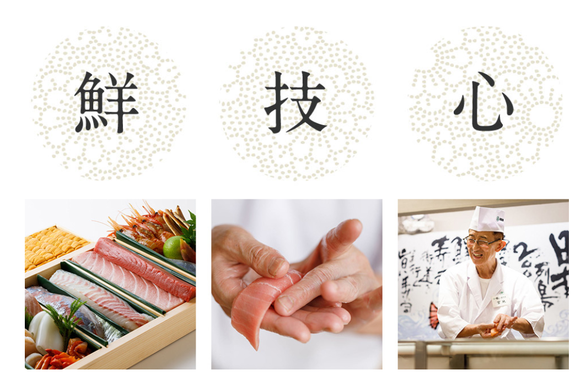
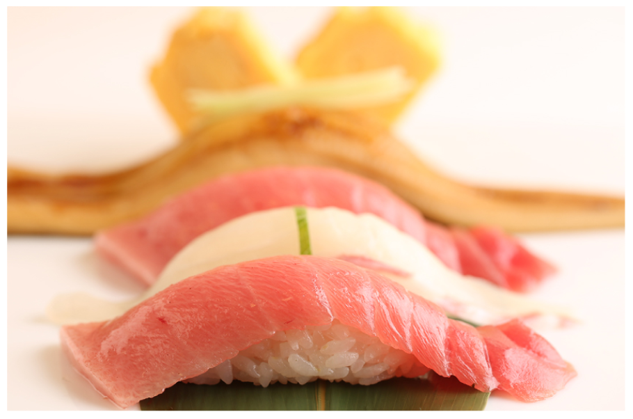
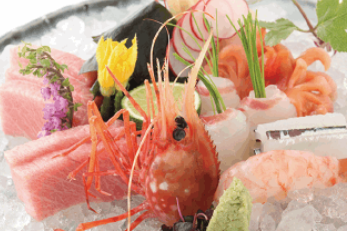
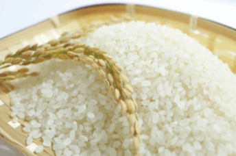
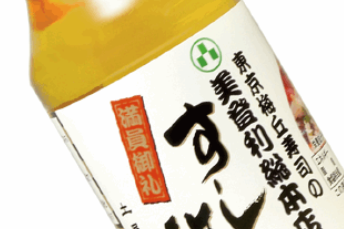
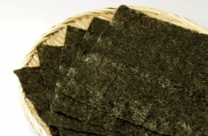

創造明日的飲食文化
新鮮的食材，熟練的職人技巧，對壽司的熱情與對客人的貼心，只要具備這三大要素，就能夠捏出打動人心的壽司，這三大要素的相輔相成是非常重要的。南門壽司的職人們用心堅持讓此三要素均衡發展，親手捏出讓客人感動的壽司。
理所當然的美味與驚艷
提到如何製作「美味」的壽司，自然就會聯想到大費周章的功夫，一般或許將此稱為「堅持」，但在南門壽司這只是「理所當然」。竭盡所能的「理所當然」一點一滴地累積起來，就形成了無比的「美味」。

南門壽司對「食材的堅持」
壽司食材
從日本東京的豐洲市場進口新鮮食材
白米
使用連續二十二年獲得「特A」評價的日本山形縣產「輝映米」
壽司醋
以嚴選酒粕經過長時間熟成釀造出口感滑順的米醋，再以南門壽司的密傳製法打造出獨一無二的壽司醋
壽司海苔
使用南門壽司專用的進口燒海苔
